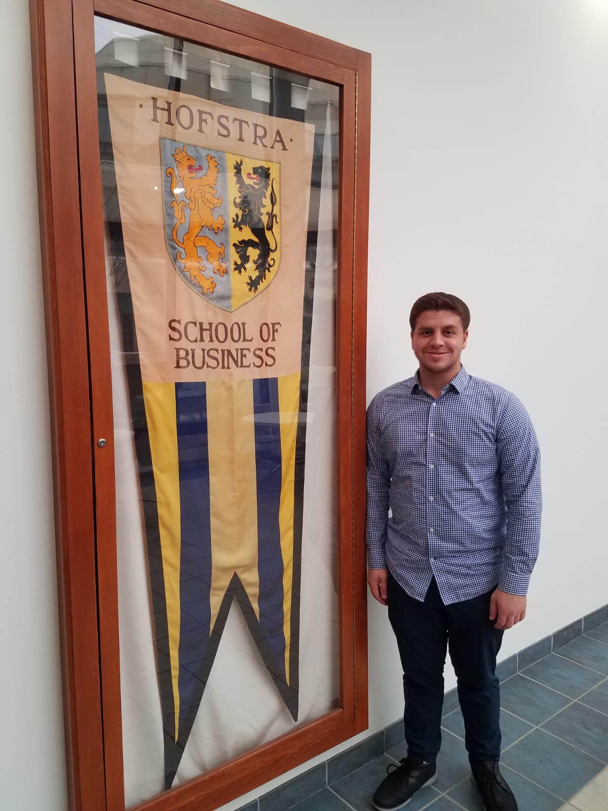

Photo of Miles Klass when first looking at Hofstra University.
Work Experience
Elevate Dynamics, San Diego, CA
Conducted A/B testing and analyzed resulting data to fuel insights and learnings that would be implemented into Elevate’s website and increase the websites conversion rates.
Collaborated with Ruckus Marketing Agency to determine methods to drive higher organic patient users to Elevate’s website.
Helped design and distribute biweekly newsletters to clinicians and patients within Elevate’s CRM.
Enabled Hotjar on the company’s website in order to track user behavior and communicated with customers through Podium.
Implemented a comprehensive approach to gather feedback on product design and functionality by recruiting Patient Ambassadors for the company and proactively engaging with user through Facebook social groups.
Created SEO-rich-in-bound patient and clinician content pages to drive more users to website.
AdVenture Media Group, Woodmere, NY
Designed and implemented Google Ads campaigns for client such as Michael Aram and Baketivity.
Worked to curate relevant key words for Google campaigns.
Helped hire outside contractors and freelancers for certain campaign projects.